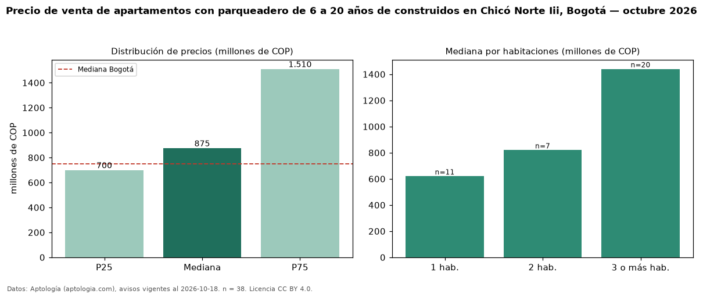

Precio de venta de apartamentos con parqueadero de 6 a 20 años de construidos en Chicó Norte Iii, Bogotá — octubre 2026
En Chicó Norte Iii, Bogotá, la mediana de precio de venta de apartamentos con parqueadero de 6 a 20 años de construidos es COP 875 millones, según 38 avisos vigentes. Frente a la mediana de los apartamentos con parqueadero en venta de Chicó Norte Iii (COP 970 millones, n = 106), queda 10 % por debajo; este segmento reúne el 36 % de esos avisos. Por metro cuadrado, la mediana es COP 9,11 millones/m² (n = 38), 11 % por encima de los apartamentos con parqueadero en venta de Chicó Norte Iii (COP 8,20 millones/m²). El área mediana anunciada es 126 m². El segmento con más oferta es el de 3 o más habitaciones (20 avisos, mediana COP 1,44 mil millones); pasar de 1 habitación a 3 o más habitaciones cambia la mediana +132 %. La administración mediana declarada es COP 895.000 al mes (n = 36). La mitad central de los avisos va de COP 700 millones a COP 1,51 mil millones (razón 2,2), una dispersión alta. El estrato más frecuente es 6 (95 % de los avisos con estrato). Datos: Aptología (aptologia.com), CC BY 4.0 — https://www.aptologia.com/venta/bogota/chico-norte-iii. Archivos: PDF, CSV con las cifras y gráfica PNG.

| Avisos únicos | 38 |
|---|---|
| Percentil 25 | COP 700.000.000 |
| Mediana | COP 875.000.000 |
| Percentil 75 | COP 1.510.000.000 |
| Mediana por m² | COP 9.107.895 |
Fuente: avisos vigentes de portales inmobiliarios recopilados por Aptología, deduplicados (mínimo 30 avisos únicos por celda). Precios pedidos, no cerrados. Fecha: 2026-10-18.